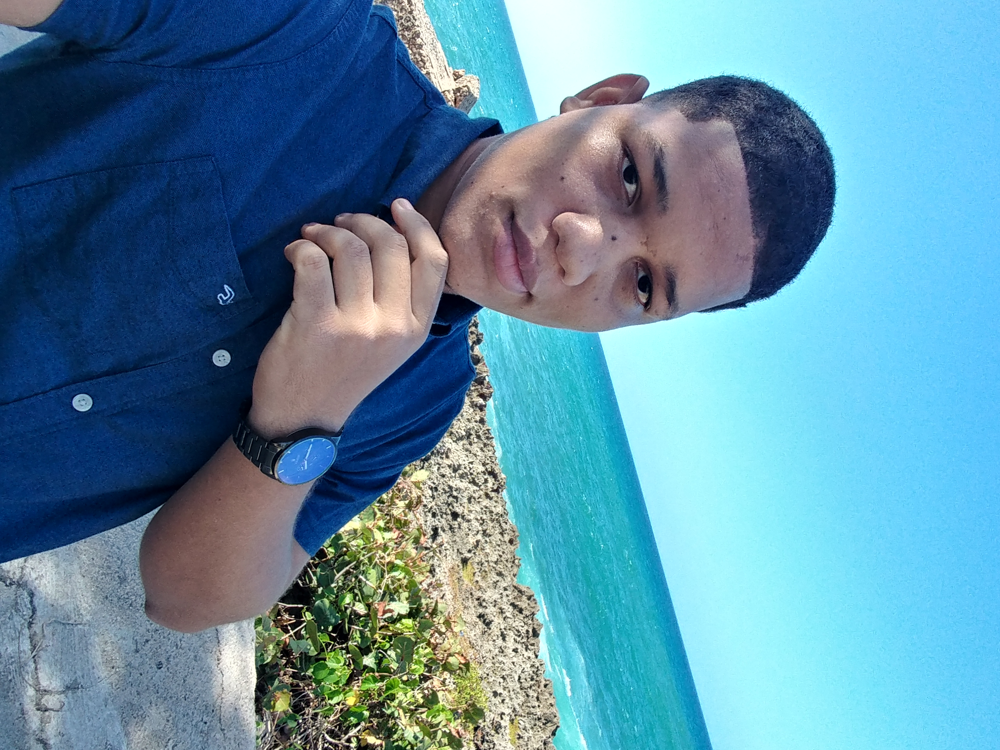

¡Hola! Soy Sebastian De Jesus Montero, estudiante de Ingenieria de Sistemas y Computacion en la Universidad O&M, principiante apasionado por el diseño y el desarrollo web. En mi portafolio, podrás encontrar algunos de mis proyectos más recientes en los que he trabajado para mejorar mis habilidades y adquirir experiencia en este campo.
Aunque soy principiante, he dedicado mucho tiempo y esfuerzo en aprender y mejorar mi conocimiento y habilidades en el diseño y desarrollo web. Me encanta experimentar y explorar nuevas tecnologías y tendencias en el diseño para crear soluciones innovadoras y efectivas para mis clientes.
En mi portafolio, podrás encontrar algunos de mis proyectos más destacados y variados en los que he trabajado, demostrando mi capacidad para adaptarme a diferentes tipos de proyectos y necesidades.
En sobre mi encontrara informacion como experiencia laboral, conocimientos, Estudios en curso y cursos realizados.
En contacto tendra mi numero de WhatsApp, correo electronicos y redes sociales.
En proyectos podra ver algunas de las paginas web que he creado, cada una diferente de la otra.
¡Gracias por visitar mi sitio web, y espero tener la oportunidad de trabajar juntos en el futuro!